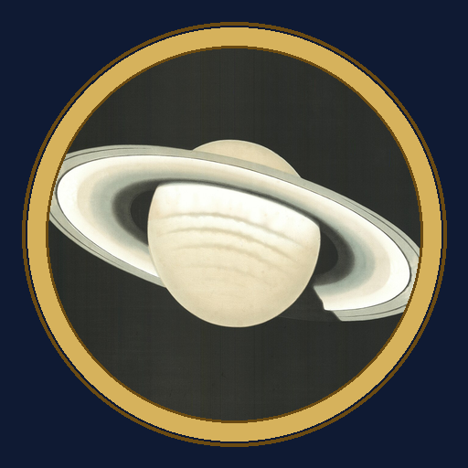

<- all projects

Little Observatory
PC
Volume
Live
Book the telescopes, light the dome, chase a star that returns every 113 years.
The Little Observatory on Beacon Hill has been dark since 1912, when Professor Ada Lindqvist walked out one night chasing a wandering star and never came back. The town gives you the keys and one season to fill the dome again. Each night from 8 PM, book every room for every hour, matching families, night owls, students and romantics while reading the cloud forecast. Collect 30 atlas cards, host 10 themed nights and follow 6 chapters to Ada's painted ceiling and the midnight hour. Be on the hill when the wanderer returns.